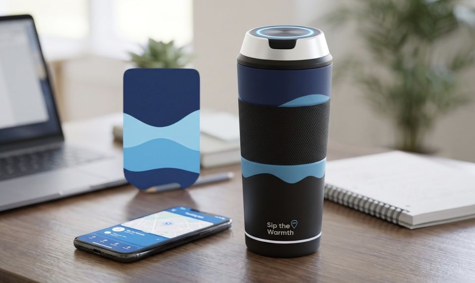

Perangkat saya
Peta ilustrasi · data contoh
Arah ke barang
Ketuk peta untuk memindahkan posisi Anda, lalu jalankan simulasi navigasi sampai tag terbaca dari dekat.
Ketuk peta untuk memindahkan posisi Anda
Lokasi dan riwayat
Posisi terakhir, jejak sepanjang hari, dan Zona Aman untuk pengingat barang tertinggal.
Lingkaran putus-putus = Zona Aman
Tambah barang
Pasangkan tag baru ke barang Anda dalam tiga langkah.
Ketuk peta untuk menandai posisi barang
Penempatan tag di tumbler
Letak tag menentukan seberapa jauh sinyalnya terbaca. Ketuk titik A, B, atau C pada gambar.
Bagian tumbler
Gambar konsep prototipe

- Tag dual-network (Find My dan Find Hub), rating tahan air IP6/7 atau lebih
- Silikon food-grade untuk kantong atau sleeve tag
- Jangka sorong untuk mengukur tag, serta satu iPhone dan satu Android untuk menguji kedua jaringan